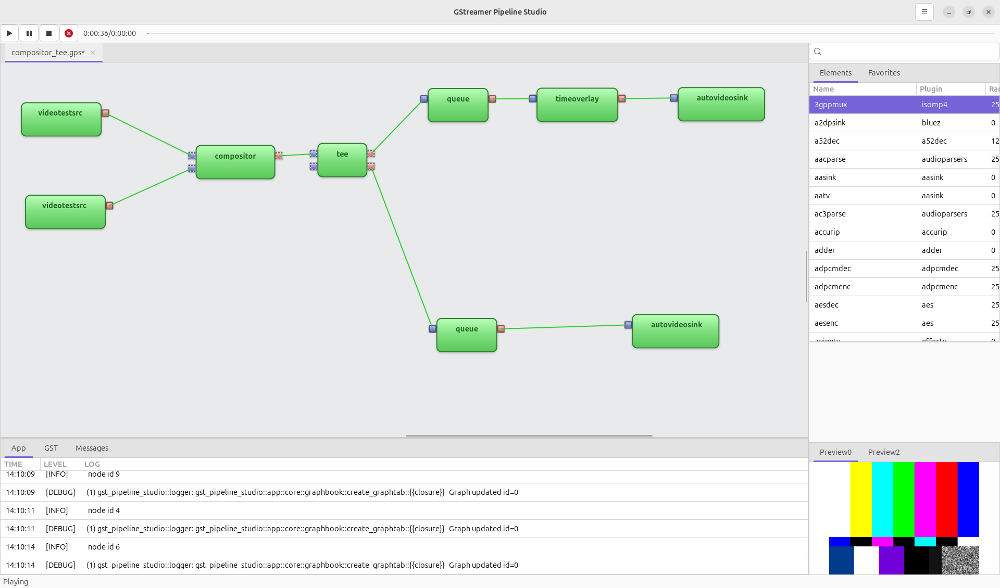

GstPipelineStudio aims to provide a graphical user interface to the GStreamer framework. From a first step in the framework with a simple pipeline to a complex pipeline debugging, the tool provides a friendly interface to add elements to a pipeline and debug it.
Download:
If you want to get the the code from Gitlab, you can visit this webpage and follow the README to build your own version of GstPipelineStudio.